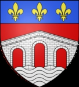

Greve av Meulan mfl. Blev ca 72 år.

omkring 1022 Pont-Audemer, Beaumont, Normandy, Frankrike. [1]
1094 Normandy, France. [1]
Roger de Beaumont (ca 1015 – 29 november 1094), feodalherre (franska: seigneur ) av Beaumont-le-Roger och Pont-Audemer i Normandie , var en mäktig normandisk adelsman och nära rådgivare till Vilhelm Erövraren .
Skäggig normandisk adelsman avbildad i Bayeuxtapeten (ca 1066), möjligen representerande Roger de Beaumont (död 1094). Figuren sitter på högra sidan av hertig Vilhelm av Normandie , som själv intar hedersplatsen vid ceremonin för välsignelsen av maten i Hastings av biskop Odo, långt före tiden för slaget
−
ET HIC EPISCOPUS CIBU(M) ET POTU(M) BENEDICIT ("Och här välsignar biskopen maten och drycken"). Festen i Hastings, varefter ett slott beordrades att byggas, varefter striden förenades. Roger de Beaumont är möjligen avbildad som skäggfiguren, se detalj ovan. Bayeux gobeläng
Innehåll
1 Ursprung
2 Fysiskt utseende
3 Karriär
4 Äktenskap och problem
5 Död och begravning
6 Källor
7 Referenser
Ursprung
Roger var son till Humphrey de Vieilles [1] (som var en sonson till hertiginnan Gunnor av Normandie) av hans hustru Albreda de la Haye Auberie. Han var således en andra kusin en gång bort från Vilhelm Erövraren . Hans normandiska feodala herreskap hade sin caput och sitt slott i Beaumont-le-Roger , en bosättning belägen på de övre delarna av floden Risle , i Normandie, cirka 46 km SW om Rouen , hertigdömets huvudstad. Han var också feodalherre av Pont-Audemer , en bosättning som byggdes runt den första bron som korsade floden Risle uppströms dess mynning, delad med floden Seine .
Fysiskt utseende
Roger fick smeknamnet La Barbe (latiniserat till Barbatus ) (dvs "The Bearded").
Karriär
Planché beskrev honom som "den ädlaste, rikaste och mest tappra seigneuren i Normandie, och den danska (dvs normandiska) familjens största och mest betrodda vän". Förklaringen till hans upphöjda position verkar vara att som en äldre kusin som aldrig hade gjort uppror mot den unge hertigen, var han en del av den släktgrupp av adelsmän som William förlitade sig på när han styrde Normandie och bekämpade frekventa uppror och invasioner. Historikern Frank McLynn observerade att William förlitade sig mycket på släktingar på sin mors sida, nämligen hans halvbröder biskop Odo och Robert, och svågrar, och på släktingar som härstammade från hertiginnan Gunnors systrar, eftersom hans egen släkting hade bevisat opålitliga.
Wace , 1100-talshistorikern, skrev att: "Vid tiden för invasionen av England kallades Roger till det stora rådet i Lillebonne, på grund av hans visdom; men han deltog inte i expeditionen eftersom han var för långt framskriden i åratal". Även om Roger inte kunde slåss, tvekade han inte att bidra med en stor del av kostnaden och tillhandahöll på egen bekostnad sextio fartyg för transporten av trupper över kanalen. Dessutom kämpade hans äldste son och arvinge tappert vid Hastings, vilket framgår av flera samtida uppteckningar. Som ett resultat belönades Rogers äldre söner generöst med landområden i England, och båda blev så småningom engelska jarlar av sönerna till Erövraren. Waces uttalande kan därför kasta tvivel på möjligheten att Roger avbildas i Bayeuxtapets fest i Hastings. Det är dock möjligt att han korsade kanalen så att han kunde fortsätta att agera som en uppskattad medlem av hertigens råd,
Äktenskap och problem
Roger gifte sig med c. 1048, Adeline av Meulan (ca 1014-1020 - 8 april 1081), [2] dotter till Waleran III, greve de Meulan av Oda de Conteville. Deras överlevande barn var:
Robert de Beaumont, 1:e jarl av Leicester , greve av Meulan (ca 1049-1118), den äldste sonen och arvtagaren. Han efterträdde sin far i större delen av hans länder och var en av de få beprövade följeslagare till Vilhelm Erövraren som stred i slaget vid Hastings 1066. [2]
Henry de Beaumont, 1:e earl av Warwick (ca 1050-1119), anförtroddes Warwicks slott. [2]
Död och begravning
Roger begravdes i Abbey of Saint-Pierre de Préaux .